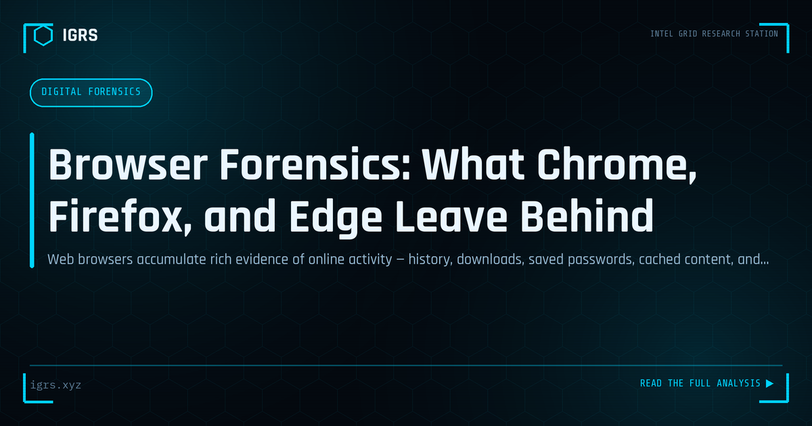

Browser Forensics: What Chrome, Firefox, and Edge Leave Behind
| File No. | IGRS-052/2026 |
| Subject | Guide to browser artefact forensics for incident investigation and digital evidence collection |
| Category | Digital Forensics |
| Author | Manuj Kumar Pandey |
| Published | 2026-05-12 |
| Reading time | 12 minutes |
Web browsers accumulate rich evidence of online activity — history, downloads, saved passwords, cached content, and session data. How investigators extract and use it.
Browser Forensics: A Window into User Activity
Web browsers are among the richest sources of evidence in digital forensics. Every search, every site visited, every download, and every saved credential leaves traces. Browser forensics — the recovery and analysis of this data — reveals a detailed picture of a user's online activity, intentions, and actions. This guide covers browser forensics methodology, the artifacts available, and their investigative value.
What Browser Forensics Recovers
| Artifact | Investigative Value |
|---|---|
| Browsing history | Sites visited, timestamps, frequency |
| Search terms | User intent and interests |
| Downloads | Files obtained, sources |
| Cookies | Sites used, session data |
| Cached files | Content viewed, even if deleted online |
| Saved passwords | Accounts accessed |
| Autofill data | Personal information entered |
Where Browsers Store Data
Modern browsers store data in SQLite databases within the user profile folder. Chrome, for instance, keeps History, Cookies, Login Data, and Web Data files under its user data directory. Firefox uses places.sqlite and related files. These databases can be parsed with forensic tools or SQLite browsers to reconstruct the user's activity in detail, including precise timestamps.
Chrome Forensics
Chrome, the most widely used browser, stores rich forensic data. The History database contains visited URLs with visit counts and timestamps. The Cookies database reveals sites the user interacted with. Login Data holds saved credentials (encrypted). Web Data contains autofill and form data. On Windows, these reside in AppData/Local/Google/Chrome/User Data/Default. Parsing them reconstructs comprehensive browsing activity.
Firefox and Other Browsers
Firefox stores history and bookmarks in places.sqlite, cookies in cookies.sqlite, and form history separately, within the profile folder. Edge, being Chromium-based, resembles Chrome's structure. Each browser has its own storage specifics, but the principle is consistent: SQLite databases in the profile folder hold the forensic gold. Investigators must know where each browser stores its data to recover it.
Recovering Deleted Browser Data
Even when a user clears their history, data may be recoverable. Deleted entries can persist in the SQLite database's unallocated pages, in the file system's unallocated space, in synced cloud data, or in related artifacts like DNS cache. Forensic recovery techniques and SQLite analysis can often retrieve browsing data the user believed was deleted, making "clearing history" less effective than users assume.
The Incognito/Private Browsing Question
Private browsing modes leave minimal traces on disk by design, but they are not perfectly private. Traces may persist in RAM (recoverable if the system is analysed before reboot), in DNS cache, in the pagefile or swap, and in network-level logs. While private browsing reduces local artifacts, forensic analysis of a live or recently-used system can sometimes recover private browsing activity. Network logs at the ISP or organisation level capture it regardless.
Cache Analysis
The browser cache stores copies of viewed content for faster loading, and this is forensically valuable. Cached images, pages, and files reveal what content the user actually viewed, sometimes preserving material that has since been deleted from the live web. Cache analysis can reconstruct what a user saw, providing evidence of viewed content even when the original source is gone.
Browser Sync and Cloud Data
Modern browsers sync data across devices through cloud accounts. This means browser evidence may exist not just on the device but in the cloud — Google account sync for Chrome, Firefox sync, Microsoft account for Edge. With appropriate legal process, this synced data can be obtained from the provider, potentially revealing activity across all the user's devices, not just the one in hand.
Legal Framework and Admissibility
Browser forensic evidence requires proper handling for admissibility. Acquisition should occur on a forensic image rather than the live system where possible, with hash verification and a Section 63 BSA 2023 certificate. Chrome and other browser artifacts are well-established forensic evidence, but their admissibility depends on sound extraction methodology and documentation. The chain of custody from device seizure through analysis must be unbroken.
Building Browser Forensics Capability
Browser forensics is a core digital forensics skill, applicable to virtually any investigation involving a computer. Developing capability requires knowing where each browser stores data, mastering SQLite analysis, understanding deleted-data recovery, and recognising the limits of private browsing. For Indian investigators, browser forensics frequently provides decisive evidence — establishing what a suspect searched, viewed, and downloaded. Combined with sound legal handling, it turns the everyday act of web browsing into a detailed, court-admissible record of user activity.